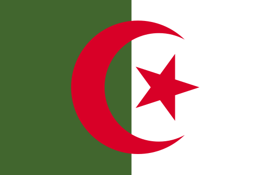

Africa
Con quali paesi confina l'Algeria?
L'Algeria confina con 7 paesi: Libia, Mali, Marocco, Mauritania, Niger, Sahara Occidentale e Tunisia.
Vedi l'Algeria sulla mappa interattiva →
Paesi confinanti dell'Algeria
Per numero di paesi confinanti l'Algeria è al 12° posto nel mondo, a pari merito con altri 7 paesi.
Scheda dell'Algeria
- Capitale
- Algeri
- Lingue ufficiali
- Arabo, berbero
- Valuta
- Dinaro algerino (DZD)
- Continente
- Africa
- Superficie
- circa 2.382.000 km²
- Paesi confinanti
- 7
Altri paesi in Africa
- Angola
- Benin
- Botswana
- Burkina Faso
- Burundi
- Camerun
- Capo Verde
- Ciad
- Comore
- Costa d'Avorio
- Egitto
- Eritrea
- eSwatini
- Etiopia
- Gabon
- Gambia
- Ghana
- Gibuti
- Guinea
- Guinea-Bissau
- Guinea Equatoriale
- Kenya
- Lesotho
- Liberia
- Libia
- Madagascar
- Malawi
- Mali
- Marocco
- Mauritania
- Mauritius
- Mozambico
- Namibia
- Niger
- Nigeria
- Repubblica Centrafricana
- Repubblica del Congo
- Repubblica Democratica del Congo
- Ruanda
- Sahara Occidentale
- São Tomé e Príncipe
- Senegal
- Seychelles
- Sierra Leone
- Somalia
- Sud Sudan
- Sudafrica
- Sudan
- Tanzania
- Togo
- Tunisia
- Uganda
- Zambia
- Zimbabwe